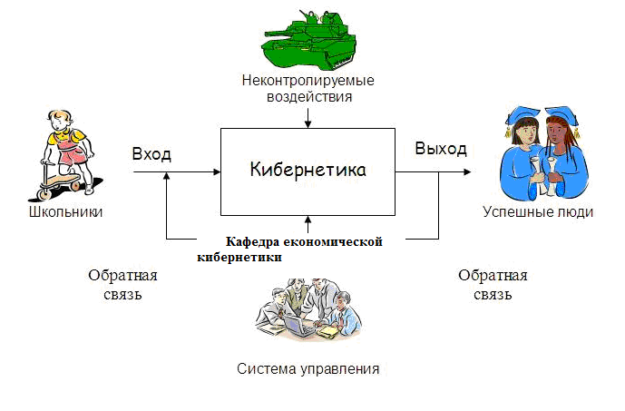

Что это?
Экономическая кибернетикa —
научное направление, занимающееся приложением идей и методов кибернетики к экономическим системам.
В расширительном и не совсем точном смысле часто под ЭК понимают область науки, возникшую на стыке математики и кибернетики с экономикой, включая математическое программирование, исследование операций, экономико-математические модели, эконометрию) и математическую экономию.
Специальность «Экономическая кибернетика»... »
Кто это?

Кибернетик
программист+экономист+аналитик. Владение современными информационными технологиями в совокупности со знаниями экономических процессов делает наших выпускников по-настоящему универсальными специалистами.
Итак, кибернетик – это современный специалист, который в совершенстве владеет компьютерной техникой, и при возникновении различных проблемных ситуаций на предприятиях и в организациях помогает не только выбрать действительно правильное решение, но и может предвидеть опасную экономическую ситуацию и предупредить об этом. Как говорят: «Кто предупрежден – тот вооружен». Это является девизом специалиста-аналитика. Без таких специалистов у предприятий нет шансов принимать эффективные и правильные решения.
Вся сила и мощь ведущих экономик западного мира основана на таких специалистах-аналитиках. Практически все решения, от инвестиций в валюту и акции, до покупки или продажи целых предприятий на западе принимаются не по приказу начальства, а на основе четких и точных математических расчетов — моделирования..
Специалист должен знать... »